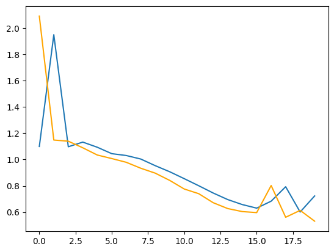

Speech#
Language Detection#
!pip show transformers datasets torch | pip install transformers datasets torch
Requirement already satisfied: transformers in /opt/hostedtoolcache/Python/3.13.2/x64/lib/python3.13/site-packages (4.49.0)
Requirement already satisfied: datasets in /opt/hostedtoolcache/Python/3.13.2/x64/lib/python3.13/site-packages (3.3.2)
Requirement already satisfied: torch in /opt/hostedtoolcache/Python/3.13.2/x64/lib/python3.13/site-packages (2.6.0)
Requirement already satisfied: filelock in /opt/hostedtoolcache/Python/3.13.2/x64/lib/python3.13/site-packages (from transformers) (3.17.0)
Requirement already satisfied: huggingface-hub<1.0,>=0.26.0 in /opt/hostedtoolcache/Python/3.13.2/x64/lib/python3.13/site-packages (from transformers) (0.29.1)
Requirement already satisfied: numpy>=1.17 in /opt/hostedtoolcache/Python/3.13.2/x64/lib/python3.13/site-packages (from transformers) (2.2.3)
Requirement already satisfied: packaging>=20.0 in /opt/hostedtoolcache/Python/3.13.2/x64/lib/python3.13/site-packages (from transformers) (24.2)
Requirement already satisfied: pyyaml>=5.1 in /opt/hostedtoolcache/Python/3.13.2/x64/lib/python3.13/site-packages (from transformers) (6.0.2)
Requirement already satisfied: regex!=2019.12.17 in /opt/hostedtoolcache/Python/3.13.2/x64/lib/python3.13/site-packages (from transformers) (2024.11.6)
Requirement already satisfied: requests in /opt/hostedtoolcache/Python/3.13.2/x64/lib/python3.13/site-packages (from transformers) (2.32.3)
Requirement already satisfied: tokenizers<0.22,>=0.21 in /opt/hostedtoolcache/Python/3.13.2/x64/lib/python3.13/site-packages (from transformers) (0.21.0)
Requirement already satisfied: safetensors>=0.4.1 in /opt/hostedtoolcache/Python/3.13.2/x64/lib/python3.13/site-packages (from transformers) (0.5.3)
Requirement already satisfied: tqdm>=4.27 in /opt/hostedtoolcache/Python/3.13.2/x64/lib/python3.13/site-packages (from transformers) (4.67.1)
Requirement already satisfied: pyarrow>=15.0.0 in /opt/hostedtoolcache/Python/3.13.2/x64/lib/python3.13/site-packages (from datasets) (19.0.1)
Requirement already satisfied: dill<0.3.9,>=0.3.0 in /opt/hostedtoolcache/Python/3.13.2/x64/lib/python3.13/site-packages (from datasets) (0.3.8)
Requirement already satisfied: pandas in /opt/hostedtoolcache/Python/3.13.2/x64/lib/python3.13/site-packages (from datasets) (2.2.3)
Requirement already satisfied: xxhash in /opt/hostedtoolcache/Python/3.13.2/x64/lib/python3.13/site-packages (from datasets) (3.5.0)
Requirement already satisfied: multiprocess<0.70.17 in /opt/hostedtoolcache/Python/3.13.2/x64/lib/python3.13/site-packages (from datasets) (0.70.16)
Requirement already satisfied: fsspec<=2024.12.0,>=2023.1.0 in /opt/hostedtoolcache/Python/3.13.2/x64/lib/python3.13/site-packages (from fsspec[http]<=2024.12.0,>=2023.1.0->datasets) (2024.12.0)
Requirement already satisfied: aiohttp in /opt/hostedtoolcache/Python/3.13.2/x64/lib/python3.13/site-packages (from datasets) (3.11.13)
Requirement already satisfied: typing-extensions>=4.10.0 in /opt/hostedtoolcache/Python/3.13.2/x64/lib/python3.13/site-packages (from torch) (4.12.2)
Requirement already satisfied: networkx in /opt/hostedtoolcache/Python/3.13.2/x64/lib/python3.13/site-packages (from torch) (3.4.2)
Requirement already satisfied: jinja2 in /opt/hostedtoolcache/Python/3.13.2/x64/lib/python3.13/site-packages (from torch) (3.1.5)
Requirement already satisfied: nvidia-cuda-nvrtc-cu12==12.4.127 in /opt/hostedtoolcache/Python/3.13.2/x64/lib/python3.13/site-packages (from torch) (12.4.127)
Requirement already satisfied: nvidia-cuda-runtime-cu12==12.4.127 in /opt/hostedtoolcache/Python/3.13.2/x64/lib/python3.13/site-packages (from torch) (12.4.127)
Requirement already satisfied: nvidia-cuda-cupti-cu12==12.4.127 in /opt/hostedtoolcache/Python/3.13.2/x64/lib/python3.13/site-packages (from torch) (12.4.127)
Requirement already satisfied: nvidia-cudnn-cu12==9.1.0.70 in /opt/hostedtoolcache/Python/3.13.2/x64/lib/python3.13/site-packages (from torch) (9.1.0.70)
Requirement already satisfied: nvidia-cublas-cu12==12.4.5.8 in /opt/hostedtoolcache/Python/3.13.2/x64/lib/python3.13/site-packages (from torch) (12.4.5.8)
Requirement already satisfied: nvidia-cufft-cu12==11.2.1.3 in /opt/hostedtoolcache/Python/3.13.2/x64/lib/python3.13/site-packages (from torch) (11.2.1.3)
Requirement already satisfied: nvidia-curand-cu12==10.3.5.147 in /opt/hostedtoolcache/Python/3.13.2/x64/lib/python3.13/site-packages (from torch) (10.3.5.147)
Requirement already satisfied: nvidia-cusolver-cu12==11.6.1.9 in /opt/hostedtoolcache/Python/3.13.2/x64/lib/python3.13/site-packages (from torch) (11.6.1.9)
Requirement already satisfied: nvidia-cusparse-cu12==12.3.1.170 in /opt/hostedtoolcache/Python/3.13.2/x64/lib/python3.13/site-packages (from torch) (12.3.1.170)
Requirement already satisfied: nvidia-cusparselt-cu12==0.6.2 in /opt/hostedtoolcache/Python/3.13.2/x64/lib/python3.13/site-packages (from torch) (0.6.2)
Requirement already satisfied: nvidia-nccl-cu12==2.21.5 in /opt/hostedtoolcache/Python/3.13.2/x64/lib/python3.13/site-packages (from torch) (2.21.5)
Requirement already satisfied: nvidia-nvtx-cu12==12.4.127 in /opt/hostedtoolcache/Python/3.13.2/x64/lib/python3.13/site-packages (from torch) (12.4.127)
Requirement already satisfied: nvidia-nvjitlink-cu12==12.4.127 in /opt/hostedtoolcache/Python/3.13.2/x64/lib/python3.13/site-packages (from torch) (12.4.127)
Requirement already satisfied: triton==3.2.0 in /opt/hostedtoolcache/Python/3.13.2/x64/lib/python3.13/site-packages (from torch) (3.2.0)
Requirement already satisfied: setuptools in /opt/hostedtoolcache/Python/3.13.2/x64/lib/python3.13/site-packages (from torch) (75.8.2)
Requirement already satisfied: sympy==1.13.1 in /opt/hostedtoolcache/Python/3.13.2/x64/lib/python3.13/site-packages (from torch) (1.13.1)
Requirement already satisfied: mpmath<1.4,>=1.1.0 in /opt/hostedtoolcache/Python/3.13.2/x64/lib/python3.13/site-packages (from sympy==1.13.1->torch) (1.3.0)
Requirement already satisfied: aiohappyeyeballs>=2.3.0 in /opt/hostedtoolcache/Python/3.13.2/x64/lib/python3.13/site-packages (from aiohttp->datasets) (2.4.8)
Requirement already satisfied: aiosignal>=1.1.2 in /opt/hostedtoolcache/Python/3.13.2/x64/lib/python3.13/site-packages (from aiohttp->datasets) (1.3.2)
Requirement already satisfied: attrs>=17.3.0 in /opt/hostedtoolcache/Python/3.13.2/x64/lib/python3.13/site-packages (from aiohttp->datasets) (25.1.0)
Requirement already satisfied: frozenlist>=1.1.1 in /opt/hostedtoolcache/Python/3.13.2/x64/lib/python3.13/site-packages (from aiohttp->datasets) (1.5.0)
Requirement already satisfied: multidict<7.0,>=4.5 in /opt/hostedtoolcache/Python/3.13.2/x64/lib/python3.13/site-packages (from aiohttp->datasets) (6.1.0)
Requirement already satisfied: propcache>=0.2.0 in /opt/hostedtoolcache/Python/3.13.2/x64/lib/python3.13/site-packages (from aiohttp->datasets) (0.3.0)
Requirement already satisfied: yarl<2.0,>=1.17.0 in /opt/hostedtoolcache/Python/3.13.2/x64/lib/python3.13/site-packages (from aiohttp->datasets) (1.18.3)
Requirement already satisfied: charset-normalizer<4,>=2 in /opt/hostedtoolcache/Python/3.13.2/x64/lib/python3.13/site-packages (from requests->transformers) (3.4.1)
Requirement already satisfied: idna<4,>=2.5 in /opt/hostedtoolcache/Python/3.13.2/x64/lib/python3.13/site-packages (from requests->transformers) (3.10)
Requirement already satisfied: urllib3<3,>=1.21.1 in /opt/hostedtoolcache/Python/3.13.2/x64/lib/python3.13/site-packages (from requests->transformers) (2.3.0)
Requirement already satisfied: certifi>=2017.4.17 in /opt/hostedtoolcache/Python/3.13.2/x64/lib/python3.13/site-packages (from requests->transformers) (2025.1.31)
Requirement already satisfied: MarkupSafe>=2.0 in /opt/hostedtoolcache/Python/3.13.2/x64/lib/python3.13/site-packages (from jinja2->torch) (3.0.2)
Requirement already satisfied: python-dateutil>=2.8.2 in /opt/hostedtoolcache/Python/3.13.2/x64/lib/python3.13/site-packages (from pandas->datasets) (2.9.0.post0)
Requirement already satisfied: pytz>=2020.1 in /opt/hostedtoolcache/Python/3.13.2/x64/lib/python3.13/site-packages (from pandas->datasets) (2025.1)
Requirement already satisfied: tzdata>=2022.7 in /opt/hostedtoolcache/Python/3.13.2/x64/lib/python3.13/site-packages (from pandas->datasets) (2025.1)
Requirement already satisfied: six>=1.5 in /opt/hostedtoolcache/Python/3.13.2/x64/lib/python3.13/site-packages (from python-dateutil>=2.8.2->pandas->datasets) (1.17.0)
from datasets import load_dataset
dataset = load_dataset("facebook/voxpopuli", "en", split='train', streaming=True, trust_remote_code=True)
/opt/hostedtoolcache/Python/3.13.2/x64/lib/python3.13/site-packages/tqdm/auto.py:21: TqdmWarning: IProgress not found. Please update jupyter and ipywidgets. See https://ipywidgets.readthedocs.io/en/stable/user_install.html
from .autonotebook import tqdm as notebook_tqdm
subset = []
for i, example in enumerate(dataset):
if i>=50:
break
subset.append(example)
---------------------------------------------------------------------------
ModuleNotFoundError Traceback (most recent call last)
File /opt/hostedtoolcache/Python/3.13.2/x64/lib/python3.13/site-packages/datasets/features/audio.py:88, in Audio.encode_example(self, value)
87 try:
---> 88 import soundfile as sf # soundfile is a dependency of librosa, needed to decode audio files.
89 except ImportError as err:
ModuleNotFoundError: No module named 'soundfile'
The above exception was the direct cause of the following exception:
ImportError Traceback (most recent call last)
Cell In[3], line 2
1 subset = []
----> 2 for i, example in enumerate(dataset):
3 if i>=50:
4 break
File /opt/hostedtoolcache/Python/3.13.2/x64/lib/python3.13/site-packages/datasets/iterable_dataset.py:2230, in IterableDataset.__iter__(self)
2226 for key, example in ex_iterable:
2227 if self.features and not ex_iterable.is_typed:
2228 # `IterableDataset` automatically fills missing columns with None.
2229 # This is done with `_apply_feature_types_on_example`.
-> 2230 example = _apply_feature_types_on_example(
2231 example, self.features, token_per_repo_id=self._token_per_repo_id
2232 )
2233 yield format_dict(example) if format_dict else example
File /opt/hostedtoolcache/Python/3.13.2/x64/lib/python3.13/site-packages/datasets/iterable_dataset.py:1734, in _apply_feature_types_on_example(example, features, token_per_repo_id)
1732 example[column_name] = None
1733 # we encode the example for ClassLabel feature types for example
-> 1734 encoded_example = features.encode_example(example)
1735 # Decode example for Audio feature, e.g.
1736 decoded_example = features.decode_example(encoded_example, token_per_repo_id=token_per_repo_id)
File /opt/hostedtoolcache/Python/3.13.2/x64/lib/python3.13/site-packages/datasets/features/features.py:1997, in Features.encode_example(self, example)
1986 """
1987 Encode example into a format for Arrow.
1988
(...) 1994 `dict[str, Any]`
1995 """
1996 example = cast_to_python_objects(example)
-> 1997 return encode_nested_example(self, example)
File /opt/hostedtoolcache/Python/3.13.2/x64/lib/python3.13/site-packages/datasets/features/features.py:1285, in encode_nested_example(schema, obj, level)
1282 if level == 0 and obj is None:
1283 raise ValueError("Got None but expected a dictionary instead")
1284 return (
-> 1285 {k: encode_nested_example(schema[k], obj.get(k), level=level + 1) for k in schema}
1286 if obj is not None
1287 else None
1288 )
1290 elif isinstance(schema, (list, tuple)):
1291 sub_schema = schema[0]
File /opt/hostedtoolcache/Python/3.13.2/x64/lib/python3.13/site-packages/datasets/features/features.py:1355, in encode_nested_example(schema, obj, level)
1352 # Object with special encoding:
1353 # ClassLabel will convert from string to int, TranslationVariableLanguages does some checks
1354 elif hasattr(schema, "encode_example"):
-> 1355 return schema.encode_example(obj) if obj is not None else None
1356 # Other object should be directly convertible to a native Arrow type (like Translation and Translation)
1357 return obj
File /opt/hostedtoolcache/Python/3.13.2/x64/lib/python3.13/site-packages/datasets/features/audio.py:90, in Audio.encode_example(self, value)
88 import soundfile as sf # soundfile is a dependency of librosa, needed to decode audio files.
89 except ImportError as err:
---> 90 raise ImportError("To support encoding audio data, please install 'soundfile'.") from err
91 if isinstance(value, str):
92 return {"bytes": None, "path": value}
ImportError: To support encoding audio data, please install 'soundfile'.
subset[:2]
[{'audio_id': '20180418-0900-PLENARY-3-en_20180418-08:50:36_17',
'language': 0,
'audio': {'path': 'train_part_0/20180418-0900-PLENARY-3-en_20180418-08:50:36_17.wav',
'array': array([-0.00030518, 0.00119019, 0.00506592, ..., -0.00036621,
-0.00027466, -0.00018311]),
'sampling_rate': 16000},
'raw_text': 'If you do not address this problem, the ground is there for populist nationalist forces to go on growing all over Europe.',
'normalized_text': 'if you do not address this problem the ground is there for populist nationalist forces to go on growing all over europe.',
'gender': 'female',
'speaker_id': '124737',
'is_gold_transcript': True,
'accent': 'None'},
{'audio_id': '20170614-0900-PLENARY-5-en_20170614-10:03:08_5',
'language': 0,
'audio': {'path': 'train_part_0/20170614-0900-PLENARY-5-en_20170614-10:03:08_5.wav',
'array': array([-0.00036621, -0.00030518, -0.00042725, ..., 0.00012207,
0.00119019, 0.00027466]),
'sampling_rate': 16000},
'raw_text': 'they attacked and removed the voices of resistance from our radio and TV stations. They attack and abuse the President who was elected in the United States of America, yet celebrate the globalist placeman they installed in France.',
'normalized_text': 'they attacked and removed the voices of resistance from our radio and tv stations. they attack and abuse the president who was elected in the united states of america yet celebrate the globalist placeman they installed in france.',
'gender': 'male',
'speaker_id': '124966',
'is_gold_transcript': True,
'accent': 'None'}]
dataset_es = load_dataset("facebook/voxpopuli", "es", split="train", streaming=True)
for i, example in enumerate(dataset_es):
if i>=50:
break
subset.append(example)
dataset_ro = load_dataset("facebook/voxpopuli","ro",split="train",streaming=True)
for i,example in enumerate(dataset_ro):
if i>=50:
break
subset.append(example)
len(subset)
150
import random
random.shuffle(subset)
import torch
from transformers import Wav2Vec2Processor, Wav2Vec2Model
from tqdm import tqdm
model,processor = 0,0
processor = Wav2Vec2Processor.from_pretrained("facebook/wav2vec2-base-960h")
model = Wav2Vec2Model.from_pretrained("facebook/wav2vec2-base-960h")
The cache for model files in Transformers v4.22.0 has been updated. Migrating your old cache. This is a one-time only operation. You can interrupt this and resume the migration later on by calling `transformers.utils.move_cache()`.
Some weights of Wav2Vec2Model were not initialized from the model checkpoint at facebook/wav2vec2-base-960h and are newly initialized: ['wav2vec2.masked_spec_embed']
You should probably TRAIN this model on a down-stream task to be able to use it for predictions and inference.
call_count = 0
total = len(subset)
def extract_wav2vec_features(batch):
global call_count, total
call_count+=1
p=(call_count/total)*100
if p%10==0:
print(f"{p}% Completed. {call_count} samples done.")
inputs = processor(batch["audio"]["array"], sampling_rate=16000, return_tensors="pt", padding=True)
with torch.no_grad():
outputs = model(**inputs)
return {"features": outputs.last_hidden_state.squeeze().mean(dim=0).numpy(), "label": batch["language"]}
subset_with_features = [extract_wav2vec_features(example) for example in subset]
10
20
30
40
50
60
70
80
90
100
110
120
130
140
150
from sklearn.model_selection import train_test_split
train_data, test_data = train_test_split(subset_with_features, test_size = 25/150, random_state = 9)
train_data, val_data = train_test_split(train_data, test_size = 25/125, random_state = 9)
print(f"train: {len(train_data)}, test: {len(test_data)}, val: {len(val_data)}")
train: 100, test: 25, val: 25
def prepare_data(data):
features = [item["features"] for item in data]
labels = [item["label"] for item in data]
return torch.tensor(features), torch.tensor(labels)
import numpy as np
train_features, train_labels = prepare_data(np.array(train_data))
val_features, val_labels = prepare_data(np.array(val_data))
test_features, test_labels = prepare_data(np.array(test_data))
<ipython-input-13-d60a81914d0e>:4: UserWarning: Creating a tensor from a list of numpy.ndarrays is extremely slow. Please consider converting the list to a single numpy.ndarray with numpy.array() before converting to a tensor. (Triggered internally at ../torch/csrc/utils/tensor_new.cpp:278.)
return torch.tensor(features), torch.tensor(labels)
import torch.nn as nn
import torch.nn.functional as f
import torch.optim as optim
input_length = train_features.shape[1]
label_mapping = {6:0, 0:1, 3:2}
train_labels = train_labels.apply_(lambda x: label_mapping[x])
val_labels = val_labels.apply_(lambda x: label_mapping[x])
test_labels = test_labels.apply_(lambda x: label_mapping[x])
print(f"train: {torch.unique(train_labels)}")
print(f"val: {torch.unique(val_labels)}")
print(f"test: {torch.unique(test_labels)}")
train: tensor([0, 1, 2])
val: tensor([0, 1, 2])
test: tensor([0, 1, 2])
class CNN(nn.Module):
def __init__(self, input_dim, num_classes):
super(CNN, self).__init__()
self.conv1 = nn.Conv1d(in_channels = input_dim, out_channels = 128, kernel_size=3, padding=1)
self.conv2 = nn.Conv1d(in_channels = 128, out_channels = 256, kernel_size = 3, padding=1)
self.fc1 = nn.Linear(256* (input_length // 4), 128)
self.fc2 = nn.Linear(128, num_classes)
def forward(self, x):
x = f.relu(self.conv1(x))
x = f.max_pool1d(x, kernel_size=2)
x = f.relu(self.conv2(x))
x = f.max_pool1d(x, kernel_size=2)
x = x.view(x.size(0), -1)
x = f.relu(self.fc1(x))
x = self.fc2(x)
return x
model = CNN(input_dim=1, num_classes=3)
criterion = nn.CrossEntropyLoss()
optimizer = optim.Adam(model.parameters(), lr=0.001)
l, vl =[], []
num_epochs = 20
for epoch in range(num_epochs):
model.train()
optimizer.zero_grad()
outputs = model(train_features.unsqueeze(1).float())
loss = criterion(outputs, train_labels)
l.append(loss.item())
loss.backward()
optimizer.step()
model.eval()
with torch.no_grad():
val_outputs = model(val_features.unsqueeze(1).float())
val_loss = criterion(val_outputs, val_labels)
vl.append(val_loss.item())
if epoch%5==0:
print(f"Epoch {epoch+1}/{num_epochs}, Loss: {loss.item()}, Val Loss: {val_loss.item()}")
Epoch 1/20, Loss: 1.0994762182235718, Val Loss: 2.092228889465332
Epoch 6/20, Loss: 1.044831395149231, Val Loss: 1.007632851600647
Epoch 11/20, Loss: 0.8544692397117615, Val Loss: 0.7757634520530701
Epoch 16/20, Loss: 0.6299132704734802, Val Loss: 0.5959126949310303
import matplotlib.pyplot as plt
plt.plot(range(len(l)), l,)
plt.plot(range(len(vl)), vl, color='orange')
plt.show()

from sklearn.metrics import accuracy_score
model.eval()
with torch.no_grad():
test_outputs = model(test_features.unsqueeze(1).float())
_, predicted = torch.max(test_outputs, 1)
accuracy = accuracy_score(test_labels.numpy(), predicted.numpy())
print(f"Test Accuracy: {accuracy*100:.2f}%")
Test Accuracy: 72.00%
Things to change
epochs
number of data points
number of languages
other feature representations (hubert, waveLM)
last_layer or mid_layer